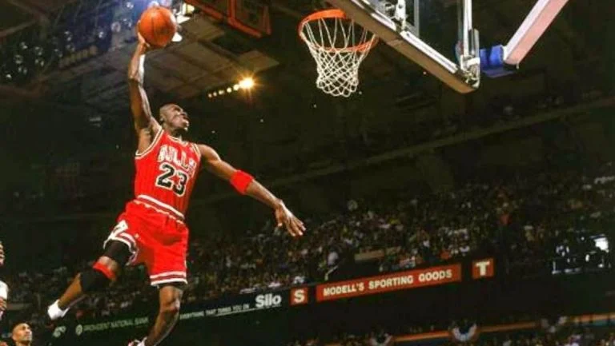
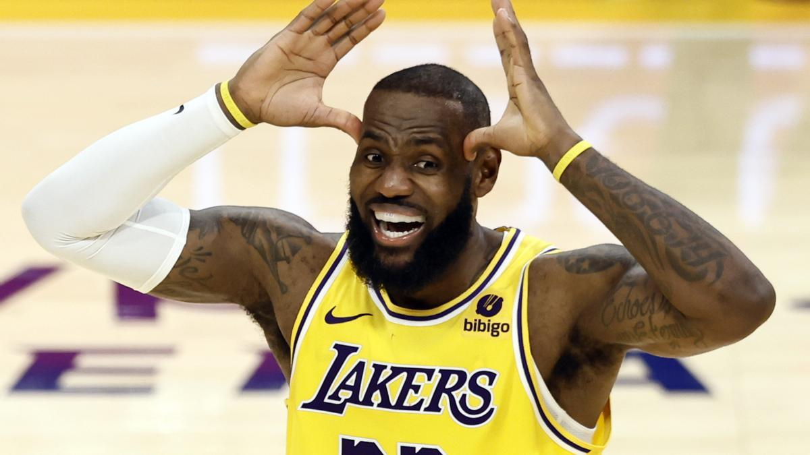

A continuación...
Historia sobre la carrera de Michael Jordan
Michael Jeffrey Jordan nació el 17 de febrero de 1963 en Brooklyn, Nueva York. Es considerado uno de los mejores jugadores de baloncesto de todos los tiempos. Jordan comenzó su carrera universitaria en la Universidad de Carolina del Norte, donde destacó desde sus primeros años. En 1984, fue seleccionado en el Draft de la NBA por los Chicago Bulls.
A lo largo de su carrera, ganó seis campeonatos de la NBA con los Bulls (1991-1993, 1996-1998), siendo nombrado Jugador Más Valioso (MVP) de las finales en cada uno de esos campeonatos. Además, fue elegido cinco veces MVP de la temporada regular y catorce veces al Juego de las Estrellas. Jordan también ganó dos medallas de oro olímpicas con el equipo de baloncesto de Estados Unidos.
Su impacto en el baloncesto y en la cultura global es innegable, ya que se convirtió en una figura icónica tanto dentro como fuera de la cancha, popularizando el baloncesto en todo el mundo.
Historia sobre la carrera de LeBron James
LeBron Raymone James nació el 30 de diciembre de 1984 en Akron, Ohio. Desde temprana edad, James fue considerado una superestrella del baloncesto, destacando en la escuela secundaria St. Vincent-St. Mary. En 2003, fue seleccionado como la primera elección del Draft de la NBA por los Cleveland Cavaliers.
A lo largo de su carrera, LeBron ha jugado en varios equipos de la NBA, incluidos los Cleveland Cavaliers, Miami Heat y Los Angeles Lakers, ganando campeonatos con todos ellos. Es cuatro veces campeón de la NBA (2012, 2013, 2016, 2020) y ha sido nombrado cuatro veces MVP de la temporada regular.
Además de su éxito en la cancha, LeBron ha tenido un impacto significativo fuera de ella, siendo un defensor de causas sociales y filantrópicas, lo que le ha ganado el respeto de sus compañeros y fanáticos en todo el mundo.